01 / OVERVIEW派系概览
僵尸海盗、火炮与海盗湾。 推荐首发领主：卢瑟·哈肯。海盗湾：在沿海定居点建立隐蔽据点；恶名解锁全局奖励。
亡灵 · 远程 / 炮兵
海盗湾：在沿海定居点建立隐蔽据点；恶名解锁全局奖励。
为什么玩它
远程炮火强，海岸游击有趣。
要注意什么
陆战机动差，深入内陆扩张弱。
沿海扩张，僵尸垫线、火炮输出；海盗湾提供稳定收入。
本页数值为 Patch 9.0.4 / Ultra 规模 / 0 级，不含科技、技能、装备、领主光环与战场增益。维护费是战役基础值，受难度、补给线与派系减免影响。中文兵种名为社区习惯译名，以游戏内简中为准。
02 / RECOMMENDED推荐兵种
每个派系挑 6 个最值得先练、先招、先知道的名字。不是“唯一答案”，但能覆盖扛线、输出、机动和攻城。
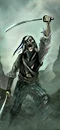
便宜。
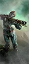
高破甲。
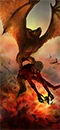
轰炸。
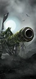
高伤害。
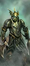
高输出。
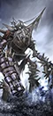
远程 + 近战。
03 / ROSTER完整兵种表
按类别展开。T 是招募等级；兵模是单位里的模型数；远程 / 射程一栏，前者是每 10 秒全队伤害，后者是射程。名将团单独列在最后。
← 左右滑动查看完整数值 →
领主与传奇领主12 个单位
| 兵种 | T | 兵模 | 生命 | 护甲 | 领导 | 速度 | 近攻 | 近防 | 武器 | 远程 / 射程 | 维护 |
|---|---|---|---|---|---|---|---|---|---|---|---|
Aranessa SaltspiteLord |
— | 1 | 4,288 | 20 | 75 | 44 | 60 | 60 | 430 | — | 250 |
Count NoctilusWizard Lord |
— | 1 | 4,996 | 95 | 75 | 38 | 45 | 60 | 430 | — | 350 |
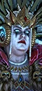 Cylostra DirefinWizard Lord |
— | 1 | 4,532 | 0 | 60 | 40 | 44 | 35 | 300 | — | 250 |
Luthor HarkonLord |
— | 1 | 4,208 | 90 | 80 | 40 | 70 | 50 | 480 | 400 / 90m | 250 |
Vampire Fleet Admiral (Pistol – Death)Wizard Lord |
— | 1 | 4,068 | 70 | 75 | 40 | 65 | 45 | 480 | 375 / 90m | 250 |
Vampire Fleet Admiral (Pistol – Deep)Wizard Lord |
— | 1 | 4,068 | 70 | 75 | 40 | 65 | 45 | 480 | 375 / 90m | 250 |
Vampire Fleet Admiral (Pistol – Undeath)Wizard Lord |
— | 1 | 4,068 | 70 | 75 | 40 | 65 | 45 | 480 | 375 / 90m | 250 |
 Vampire Fleet Admiral (Pistol – Vampires)Wizard Lord |
— | 1 | 4,068 | 70 | 75 | 40 | 65 | 45 | 480 | 375 / 90m | 250 |
Vampire Fleet Admiral (Polearms – Death)Wizard Lord |
— | 1 | 4,068 | 70 | 75 | 38 | 45 | 60 | 400 | — | 250 |
Vampire Fleet Admiral (Polearms – Deep)Wizard Lord |
— | 1 | 4,068 | 70 | 75 | 38 | 45 | 60 | 400 | — | 250 |
 Vampire Fleet Admiral (Polearms – Undeath)Wizard Lord |
— | 1 | 4,068 | 70 | 75 | 38 | 45 | 60 | 400 | — | 250 |
Vampire Fleet Admiral (Polearms – Vampires)Wizard Lord |
— | 1 | 4,068 | 70 | 75 | 38 | 45 | 60 | 400 | — | 250 |
英雄6 个单位
| 兵种 | T | 兵模 | 生命 | 护甲 | 领导 | 速度 | 近攻 | 近防 | 武器 | 远程 / 射程 | 维护 |
|---|---|---|---|---|---|---|---|---|---|---|---|
Gunnery WightSupport Specialist |
— | 1 | 3,972 | 30 | 60 | 40 | 34 | 38 | 400 | 300 / 180m | 250 |
Mourngul HaunterMelee Specialist |
— | 1 | 6,568 | 40 | 60 | 54 | 48 | 38 | 420 | — | 325 |
Vampire Fleet Captain (Death)Wizard |
— | 1 | 3,572 | 30 | 60 | 38 | 60 | 40 | 430 | — | 250 |
Vampire Fleet Captain (Deep)Wizard |
— | 1 | 3,572 | 30 | 60 | 38 | 60 | 40 | 430 | — | 250 |
Vampire Fleet Captain (Undeath)Wizard |
— | 1 | 3,572 | 30 | 60 | 38 | 60 | 40 | 430 | — | 250 |
 Vampire Fleet Captain (Vampires)Wizard |
— | 1 | 3,572 | 30 | 60 | 38 | 60 | 40 | 430 | — | 250 |
近战步兵5 个单位
| 兵种 | T | 兵模 | 生命 | 护甲 | 领导 | 速度 | 近攻 | 近防 | 武器 | 远程 / 射程 | 维护 |
|---|---|---|---|---|---|---|---|---|---|---|---|
Zombie Pirate Deckhand MobDual Sword Infantry |
T1 | 160 | 12,000 | 15 | 35 | 23 | 17 | 15 | 29 | — | 62 |
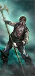 Zombie Pirate Deckhand Mob (Polearms)Halberd Infantry |
T1 | 160 | 12,000 | 15 | 35 | 23 | 14 | 20 | 27 | — | 100 |
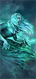 SyreensMelee Infantry |
T2 | 60 | 6,720 | 0 | 50 | 48 | 26 | 34 | 32 | — | 213 |
Depth GuardDual Axe Infantry |
T3 | 60 | 7,800 | 90 | 60 | 36 | 50 | 36 | 64 | — | 300 |
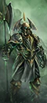 Depth Guard (Polearms)Halberd Infantry |
T3 | 60 | 7,800 | 90 | 60 | 36 | 42 | 44 | 44 | — | 325 |
远程步兵5 个单位
| 兵种 | T | 兵模 | 生命 | 护甲 | 领导 | 速度 | 近攻 | 近防 | 武器 | 远程 / 射程 | 维护 |
|---|---|---|---|---|---|---|---|---|---|---|---|
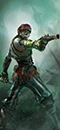 Zombie Pirate Gunnery MobPistol Missile Infantry |
T1 | 120 | 7,560 | 15 | 35 | 23 | 14 | 6 | 15 | 13 / 90m | 75 |
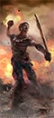 Zombie Pirate Gunnery Mob (Bombers)Explosives Infantry |
T1 | 120 | 7,560 | 15 | 35 | 23 | 14 | 6 | 15 | 16 / 55m | 113 |
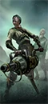 Deck GunnersSpecialist Missile Infantry |
T2 | 36 | 3,888 | 15 | 45 | 23 | 5 | 10 | 18 | 43 / 245m | 175 |
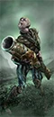 Zombie Pirate Gunnery Mob (Hand Cannons)Close-Quarters Missile Infantry |
T2 | 120 | 7,560 | 15 | 35 | 23 | 8 | 6 | 15 | 34 / 90m | 150 |
Zombie Pirate Gunnery Mob (Handgunners)Missile Infantry |
T2 | 120 | 7,560 | 15 | 35 | 23 | 8 | 6 | 15 | 22 / 145m | 138 |
怪步 / 飞行步兵4 个单位
| 兵种 | T | 兵模 | 生命 | 护甲 | 领导 | 速度 | 近攻 | 近防 | 武器 | 远程 / 射程 | 维护 |
|---|---|---|---|---|---|---|---|---|---|---|---|
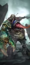 Animated HulksMonstrous Infantry |
T2 | 16 | 9,632 | 30 | 35 | 42 | 28 | 24 | 90 | — | 188 |
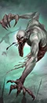 MourngulsMonstrous Infantry |
T2 | 16 | 8,960 | 30 | 50 | 54 | 36 | 26 | 100 | — | 238 |
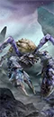 Rotting PrometheansMonstrous Beast |
T3 | 12 | 7,920 | 120 | 45 | 45 | 38 | 48 | 90 | — | 250 |
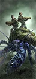 Rotting Prometheans (Gunnery Mob)Monstrous Missile Beasts |
T3 | 12 | 8,112 | 120 | 45 | 45 | 38 | 48 | 90 | — | 325 |
战兽5 个单位
| 兵种 | T | 兵模 | 生命 | 护甲 | 领导 | 速度 | 近攻 | 近防 | 武器 | 远程 / 射程 | 维护 |
|---|---|---|---|---|---|---|---|---|---|---|---|
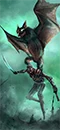 Deck DroppersFlying Pistol Cavalry |
T1 | 16 | 3,008 | 15 | 40 | 80 | 26 | 22 | 26 | 33 / 80m | 113 |
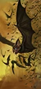 Fell BatsFlying War Beasts |
T1 | 60 | 4,200 | 0 | 30 | 110 | 19 | 44 | 26 | — | 88 |
Deck Droppers (Bombers)Flying Missile Cavalry |
T2 | 16 | 3,008 | 15 | 40 | 80 | 26 | 22 | 26 | 27 / 60m | 125 |
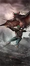 Deck Droppers (Handgunners)Flying Missile Cavalry |
T2 | 16 | 3,008 | 15 | 40 | 80 | 26 | 22 | 26 | 34 / 130m | 175 |
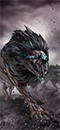 Scurvy DogsWar Beasts |
T2 | 80 | 6,080 | 0 | 35 | 95 | 26 | 14 | 22 | — | 125 |
巨兽4 个单位
| 兵种 | T | 兵模 | 生命 | 护甲 | 领导 | 速度 | 近攻 | 近防 | 武器 | 远程 / 射程 | 维护 |
|---|---|---|---|---|---|---|---|---|---|---|---|
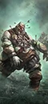 Bloated CorpseExploding Monster |
T1 | 1 | 1,608 | 0 | 100 | 38 | 75 | 40 | 450 | — | 100 |
Necrofex ColossusArtillery Monster |
T4 | 1 | 9,507 | 75 | 50 | 45 | 42 | 34 | 475 | 600 / 330m | 450 |
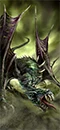 Death Shriek TerrorgheistFlying Monster |
T5 | 1 | 8,289 | 80 | 45 | 90 | 41 | 47 | 530 | — | 500 |
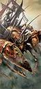 Rotting LeviathanMonster |
T5 | 1 | 9,894 | 150 | 55 | 50 | 52 | 42 | 480 | — | 535 |
炮兵 / 战争机器2 个单位
| 兵种 | T | 兵模 | 生命 | 护甲 | 领导 | 速度 | 近攻 | 近防 | 武器 | 远程 / 射程 | 维护 |
|---|---|---|---|---|---|---|---|---|---|---|---|
CarronadesSiege Artillery |
T2 | 4 | 4,356 | 20 | 40 | 20 | 10 | 6 | 18 | 200 / 450m | 188 |
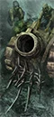 MortarsSiege Artillery |
T2 | 4 | 4,356 | 20 | 40 | 20 | 10 | 6 | 18 | 103 / 380m | 150 |
名将团9 个单位
| 兵种 | T | 兵模 | 生命 | 护甲 | 领导 | 速度 | 近攻 | 近防 | 武器 | 远程 / 射程 | 维护 |
|---|---|---|---|---|---|---|---|---|---|---|---|
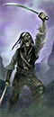 The Tide of Skjold (Zombie Pirate Deckhand Mob)Dual Sword Infantry · Renown |
T1 | 160 | 12,000 | 15 | 45 | 23 | 25 | 20 | 29 | — | 106 |
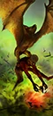 Salt Lord Scuttlers (Deck Droppers – Bombers)Flying Missile Cavalry · Renown |
T2 | 16 | 3,008 | 15 | 50 | 80 | 34 | 29 | 26 | 26 / 60m | 188 |
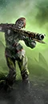 The Black Spot (Zombie Pirate Gunnery Mob – Handgunners)Missile Infantry · Renown |
T2 | 120 | 7,560 | 15 | 45 | 23 | 20 | 14 | 27 | 22 / 145m | 200 |
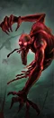 Night Terrors (Mournguls)Monstrous Infantry · Renown |
T3 | 16 | 8,960 | 30 | 72 | 54 | 52 | 33 | 120 | — | 300 |
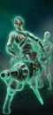 Shadewraith Gunners (Deck Gunners)Specialist Missile Infantry · Renown |
T3 | 36 | 3,888 | 0 | 55 | 23 | 17 | 18 | 18 | 33 / 245m | 263 |
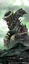 Queen BessSiege Artillery · Renown |
T4 | 1 | 7,392 | 30 | 40 | 20 | 14 | 9 | 29 | 236 / 450m | 400 |
The Bloody Reaver Deck Guard (Depth Guard)Halberd Infantry · Renown |
T4 | 60 | 7,800 | 90 | 70 | 36 | 52 | 54 | 44 | — | 375 |
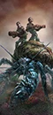 The Lamprey's Revenge (Rotting Promethean Gunnery Mob)Monstrous Missile Beasts · Renown |
T4 | 12 | 8,112 | 120 | 55 | 45 | 48 | 59 | 90 | — | 425 |
Gallows Giant (Necrofex Colossus)Artillery Monster · Renown |
T5 | 1 | 9,507 | 75 | 60 | 45 | 52 | 43 | 475 | 735 / 110m | 500 |
已排除“扩展名册（extended roster）”单位。数值为 Patch 9.0.4；不同版本可能微调。
04 / ARMY BUILD配兵思路
先按角色填槽，再按对手换兵。下面是一个通用的 20 槽骨架，以及用本页推荐兵种拼出的示例。
| 角色 | 建议槽位 | 说明 |
|---|---|---|
| 扛线 | 5–6 | 持盾 / 重甲步兵，任务是站住，不是杀敌。 |
| 远程 | 3–5 | 弓箭、火枪或炮兵；至少 2 队能打重甲。 |
| 机动 | 3–4 | 骑兵、战车、飞行单位；包抄、背冲、追逃。 |
| 巨兽 / 炮兵 | 1–3 | 破阵、斩将、攻城；别孤军深入。 |
| 英雄 | 1–3 | 法师 + 支援英雄，嵌入主力。 |
示例：4× 僵尸甲板水手 + 2× 深渊守卫 + 4× 僵尸火枪手 + 3× 甲板投弹手 + 2× 死灵巨像 + 领主 + 1 英雄，余下 3–4 槽按对手补破甲 / 反大型 / 炮兵。
重甲多带破甲（火枪、大炮、巨斧）；巨兽多带反大型（长戟、弩炮）；鼠人 / 绿皮多带范围伤害（吹息、炮兵、火焰）；骑兵多留 2 队长戟或反大型。不要一套配兵打到底。